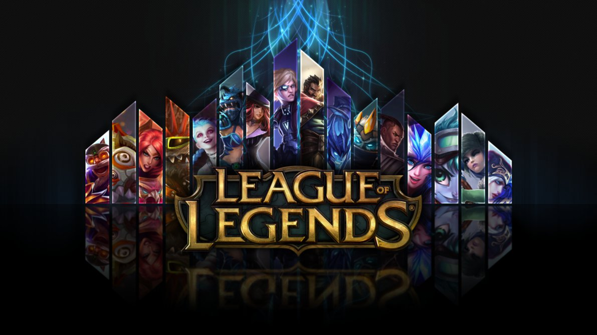
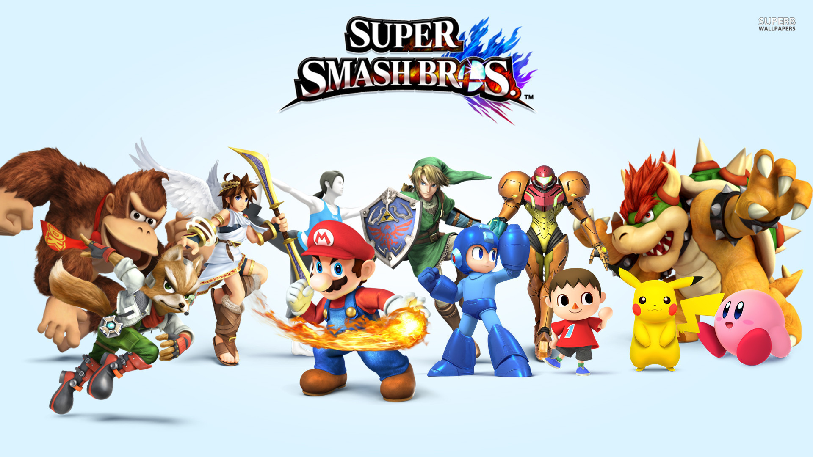

Games We Play

League of Legends
League of Legends is a multiplayer online battle arena video game developed and published by Riot Games for Microsoft Windows and macOS. Wikipedia

Super Smash Brothers
Super Smash Bros. for Nintendo 3DS and Super Smash Bros. for Wii U are fighting video games developed by Sora Ltd. and Bandai Namco Games, with assistance from tri-Crescendo, and published by Nintendo... Wikipedia

Heroes of the Storm
Heroes of the Storm is a multiplayer online battle arena video game developed and published by Blizzard Entertainment for Microsoft Windows and macOS. Wikipedia